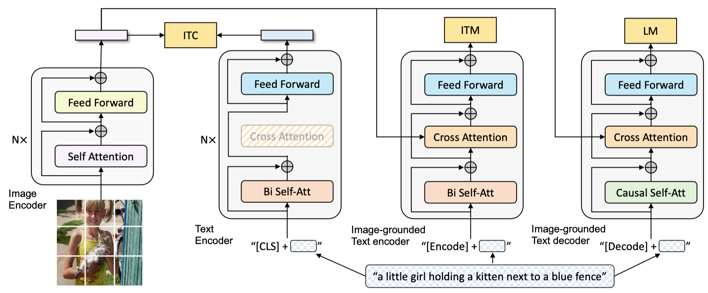
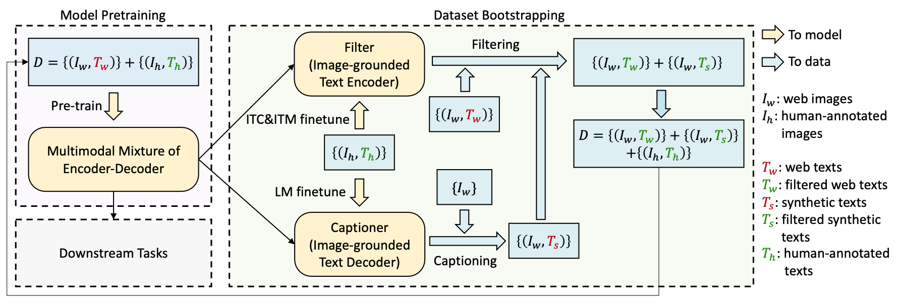

BLIP¶
- Paper：《BLIP: Bootstrapping Language-Image Pre-training for Unified Vision-Language Understanding and Generation》
1. Introduction¶
-
当前模型的缺陷：
- 模型视角：大多数据模型采用的是encoder-based model 或者 encoder-decoder model，但是encoder-decoder并没有成功解决image-text retrieval task，所以encoder-decoder model解决文本生成任务不够简单有效。
- 数据视角：当前SOAT的模型CLIP和ALBEF，SimVLM都在是网上公开获得的数据，尽管随着数据集规模加大，效果有提升，但是有噪声的文本数据对vision-language learning效果是次优的。
-
BLIP模型的contributions：
- 一种新高效预训练和弹性迁移学习的模型架构：Multimodal mixture of Encoder-Decoder (MED)。单模态encoder、image-grounded text encoder、image-grounded text decoder都支持。联合预训练三类Vision-language objectives: image- text contrastive learning, image-text matching, and image- conditioned language modeling。
- Captioning and Filtering(CapFilt)：一种从噪声数据学习并扩展数据集方法。capitoner：从给定的网页图片中产生合成的caption，filter：从原始web文本数据和合成数据中剔除噪声caption。
-
2个key observations：
- captioner和filter合并一起工作，利用bootstrapping the captions在各种下游任务都取得较好的效果提升。
- BLIP在一些列Vision-language task都取得SOAT的效果，包括image-text retrieval/image captioning/visual question answering/visual reasoning/visual dialog。同时把模型迁移至video-language task在Zero-shot方面也取得了SOAT的效果，包括text-to-video retrival和Video QA。
2. Related Work¶
2.1 Vision-language Pre-training¶
- Vision-language pre-training (VLP)目标：improve performance of downstream vision and language tasks by pre-training the model on large-scale image-text pairs。
- 最大的挑战是兼顾理解类任务（image-text检索）和生成类任务（image captioning）。The biggest challenge is to design model architectures that can perform both understanding-based tasks (e.g. image-text retrieval) and generation-based tasks (e.g. image captioning)，无论是encoder-based还是decoder-based模型都不擅长这两类任务，且单一统一的encoder-decoder限制了模型的性能。
2.2 Knowledge Distillation¶
- 知识蒸馏（KD，Knowledge Distillation）：CapFilt：可以看做是一种在VLP环境（context）中更加高效方式的KD，可以从语义丰富的合成caption中蒸馏知识，且过滤其中噪音caption。看来，CapFilt是一种知识蒸馏方式实现的。
2.3 Data Augmentation¶
- DA（数据增强），对language task来说，DA不够简单有效。以往的generative language model一般都聚焦与低资源的language-only合成任务，但是本文的方式聚焦于合成caption在 large-scale vision-language pre-training任务重。
3. Method¶
3.1 Model Architecture¶
- 模型结构图： 
- Unimodal encoder：
- image encoder：VIT（Visual Transform）；
- text encoder：BERT；
- multi-task model，多任务学习；
- 任务1：ITC（image-text contrastive）， understanding-based objective，图片和文本描述的对比学习任务；
- 任务2：ITM（image-text matching）， understanding-based objective，图片和文本的匹配任务；
- 任务3：LM任务，generation- based objective，generate captions given images；
3.2 Pre-training Objectives¶
- Image-Text Contrastive Loss (ITC)：目标是将图片Visual Transformer和文本Text Transformer特征空间对齐。对齐方式：图片内容和文本内容做对比学习。
- Image-Text Matching Loss (ITM)：目标是学习image-text多模态表示学习，使得表示向量可以捕获vision和language合适粒度对齐；二分类模型：判断图文是否匹配二分类。
- Language Modeling Loss (LM)：目标是通过给定的图片生成文本；
- SA：self-attention
- CA：cross-attention
- FFN：feed forward network
- 因果关系注意力模型：causal self-attention to predict next tokens
3.3 CapFilt¶
- 整理框架结构： 
- 该方法的目标：提高文本数据集的数据质量；
- captioner：根据给定的图片生成对应的captions；
- filter：剔除image-text的噪声数据；
- captioner和filter最开始是通过一些人工标注数据来初始化。The captioner and filter are initialized from the same pre-trained model and finetuned individually on a small-scale human-annotated dataset；
4. Experiments and Discussions¶
- 多样性是合成caption的关键，Diversity is Key for Synthetic Captions；
- 采用nucleus sampling去生成Synthetic Captions；
- stochastic（随机的） decoding：nucleus sampling====》可以生成多种类型并出乎意料的caption；
- deterministic（确定性的） decoding：beam search===》确定性生成高质量或者安全的caption；
- VLP：vision language pre-train；
6. Additional Ablation Study¶
- longer training并没有什么卵用；
- continue training并没有什么卵用；